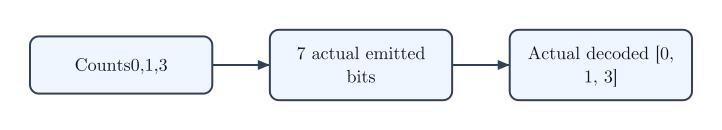
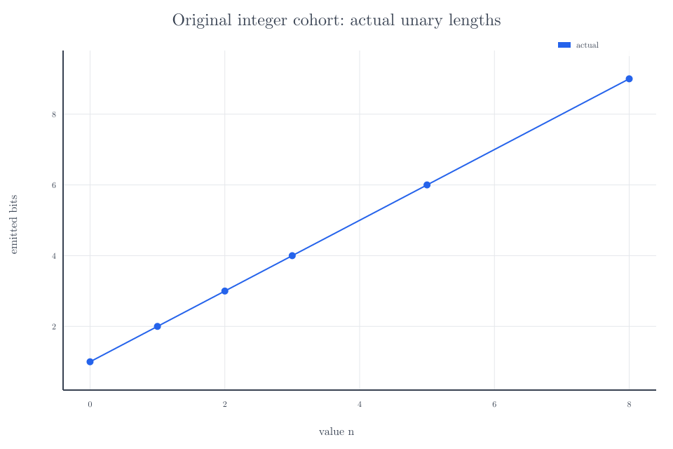
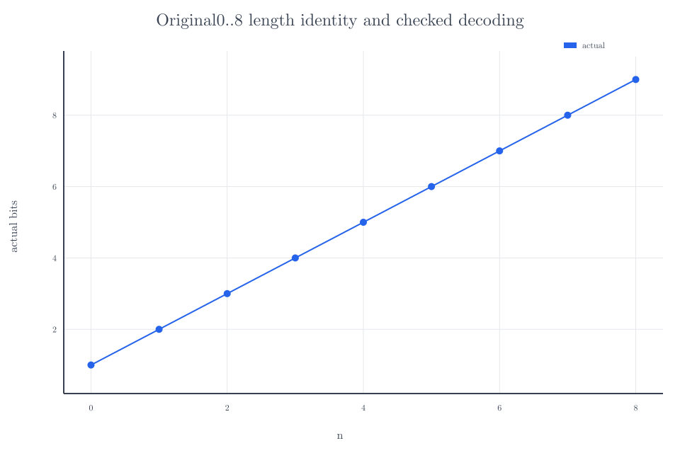
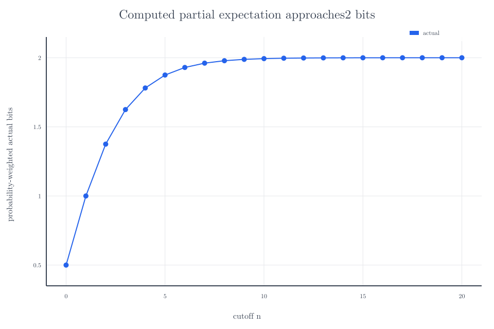

Unary coding: actual words and complete decoding
Abstract
Representing small nonnegative counts can use a delimiter instead of a length field. Unary coding writes one mark per unit followed by zero; its simplicity comes with linear length in the represented value.
The method
The code for n is1 repeated n times, then0, giving length L(n)=n+1. The zero delimiter makes concatenations uniquely decodable. For P(n)=2(−n−1), Kraft sum Σ2(−L(n))=1 and −log2 P(n)=L(n); the mean length and entropy both equal2 bits. This exact match is specific to that geometric source, not arbitrary integer data.
Simple worked example
#include <dm/dm.hpp>
int main() {
namespace a = dm::algorithms;
namespace g = dm::graphics;
std::filesystem::create_directories("build");
auto bits = a::unary_encode({0, 1, 3});
auto decoded = a::unary_decode(bits, 3);
std::print("| actual stream | actual decoded |\n|---|---|\n|`{}`|`{}`|\n",
bits, decoded);
g::Diagram concept_diagram(48, 1100);
concept_diagram.node("n0", {0, 0}, "Counts0,1,3");
concept_diagram.node("n1", {5, 0},
std::format("{} actual emitted bits", bits.size()));
concept_diagram.node("n2", {10, 0},
std::format("Actual decoded {}", decoded));
concept_diagram.edge("n0", "n1").edge("n1", "n2");
concept_diagram.save_svg("build/unary_coding_tiny.svg");
}| actual stream | actual decoded |
|---|---|
[false, true, false, true, true, true, false] | [0, 1, 3] |

The retained original experiment
#include <dm/dm.hpp>
int main() {
namespace a = dm::algorithms;
namespace g = dm::graphics;
std::filesystem::create_directories("build");
std::vector<double> x, y;
std::print("| n | actual word | actual bits | ideal source information |\n|---:|---|---:|---:|\n");
for (std::uint64_t n : {0, 1, 2, 3, 5, 8}) {
auto b = a::unary_encode({n});
std::string word;
for (bool bit : b)
word += bit ? '1' : '0';
std::print("|{}|{}|{}|{}|\n", n, word, b.size(), n + 1);
x.push_back(n);
y.push_back(b.size());
}
auto stream = a::unary_encode({0, 1, 2, 3, 5, 8});
std::print("\nActual round trip `{}`.\n", a::unary_decode(stream, 6));
auto p = g::RPlot::create();
p.line(x, y, "actual", {37, 99, 235}, 2);
p.points(x, y, "", {37, 99, 235}, 5);
p.title("Original integer cohort: actual unary lengths").x_label("value n").y_label("emitted bits");
p.save_svg("build/unary_coding_original.svg");
}| n | actual word | actual bits | ideal source information |
|---|---|---|---|
| 0 | 0 | 1 | 1 |
| 1 | 10 | 2 | 2 |
| 2 | 110 | 3 | 3 |
| 3 | 1110 | 4 | 4 |
| 5 | 111110 | 6 | 6 |
| 8 | 111111110 | 9 | 9 |
Actual round trip [0, 1, 2, 3, 5, 8].

Checking the theory and controls
#include <dm/dm.hpp>
int main() {
namespace a = dm::algorithms;
namespace g = dm::graphics;
std::filesystem::create_directories("build");
std::vector<double> x, y;
std::print("| n | actual code length | decode |\n|---:|---:|---:|\n");
for (int n = 0; n <= 8; ++n) {
auto b = a::unary_encode({std::uint64_t(n)});
auto v = a::unary_decode(b, 1);
std::print("|{}|{}|{}|\n", n, b.size(), v[0]);
x.push_back(n);
y.push_back(b.size());
}
try {
a::unary_decode({true, true}, 1);
} catch (const std::invalid_argument &) {
std::print("\nMissing zero delimiter is rejected.\n");
}
auto p = g::RPlot::create();
p.line(x, y, "actual", {37, 99, 235}, 2);
p.points(x, y, "", {37, 99, 235}, 5);
p.title("Original0..8 length identity and checked decoding").x_label(
"n").y_label("actual bits");
p.save_svg("build/unary_coding_controls.svg");
}| n | actual code length | decode |
|---|---|---|
| 0 | 1 | 0 |
| 1 | 2 | 1 |
| 2 | 3 | 2 |
| 3 | 4 | 3 |
| 4 | 5 | 4 |
| 5 | 6 | 5 |
| 6 | 7 | 6 |
| 7 | 8 | 7 |
| 8 | 9 | 8 |
Missing zero delimiter is rejected.

Sensitivity and selected work
#include <dm/dm.hpp>
int main() {
namespace a = dm::algorithms;
namespace g = dm::graphics;
std::filesystem::create_directories("build");
std::vector<double> x, y;
std::print("| cutoff | partial geometric probability | partial expected bits |\n|---:|---:|---:|\n");
double mass = 0, mean = 0;
for (int n = 0; n <= 20; ++n) {
double probability = std::ldexp(1., -n - 1);
auto b = a::unary_encode({std::uint64_t(n)});
mass += probability;
mean += probability * b.size();
std::print("|{}|{}|{}|\n", n, mass, mean);
x.push_back(n);
y.push_back(mean);
}
auto p = g::RPlot::create();
p.line(x, y, "actual", {37, 99, 235}, 2);
p.points(x, y, "", {37, 99, 235}, 5);
p.title("Computed partial expectation approaches2 bits").x_label("cutoff n").y_label("probability-weighted actual bits");
p.save_svg("build/unary_coding_work.svg");
}| cutoff | partial geometric probability | partial expected bits |
|---|---|---|
| 0 | 0.5 | 0.5 |
| 1 | 0.75 | 1 |
| 2 | 0.875 | 1.375 |
| 3 | 0.9375 | 1.625 |
| 4 | 0.96875 | 1.78125 |
| 5 | 0.984375 | 1.875 |
| 6 | 0.9921875 | 1.9296875 |
| 7 | 0.99609375 | 1.9609375 |
| 8 | 0.998046875 | 1.978515625 |
| 9 | 0.9990234375 | 1.98828125 |
| 10 | 0.99951171875 | 1.99365234375 |
| 11 | 0.999755859375 | 1.99658203125 |
| 12 | 0.9998779296875 | 1.9981689453125 |
| 13 | 0.99993896484375 | 1.9990234375 |
| 14 | 0.999969482421875 | 1.999481201171875 |
| 15 | 0.9999847412109375 | 1.999725341796875 |
| 16 | 0.9999923706054688 | 1.9998550415039062 |
| 17 | 0.9999961853027344 | 1.9999237060546875 |
| 18 | 0.9999980926513672 | 1.999959945678711 |
| 19 | 0.9999990463256836 | 1.999979019165039 |
| 20 | 0.9999995231628418 | 1.9999890327453613 |

Interpretation and limits
Complete streams are capped at one million bits; admission avoids huge unbounded unary allocation. Negative output counts, truncated words and trailing bits are errors. Empty streams decode only zero requested words. The plotted geometric expectation is an exact distributional calculation rather than timing data.
The complete editable C++ programs save figures locally; results contain ordinary computed Markdown. Selected counters describe actual producer operations, excluding validation when stated.
References
The recurrence and proof above derive the implemented behavior.
Verified in the shared ten-document batch: 84 scoped native cases;20 directly
instrumented ASan/UBSan cases;45 executable public examples;127/127 definitions
across12 full scopes;10 hovers;2400 independent records/9344 checks;9 frozen
valid-input families plus the unchanged shared merge producer;11
checkout/installed standalone headers and linked ten-family consumer;40 executed
programs and40 inspected figures with both exports. Receipts:
build/mepml-conversion/batch-414-423/.